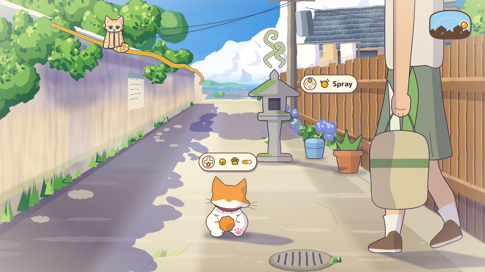
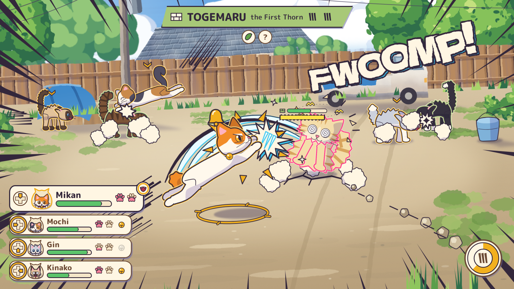
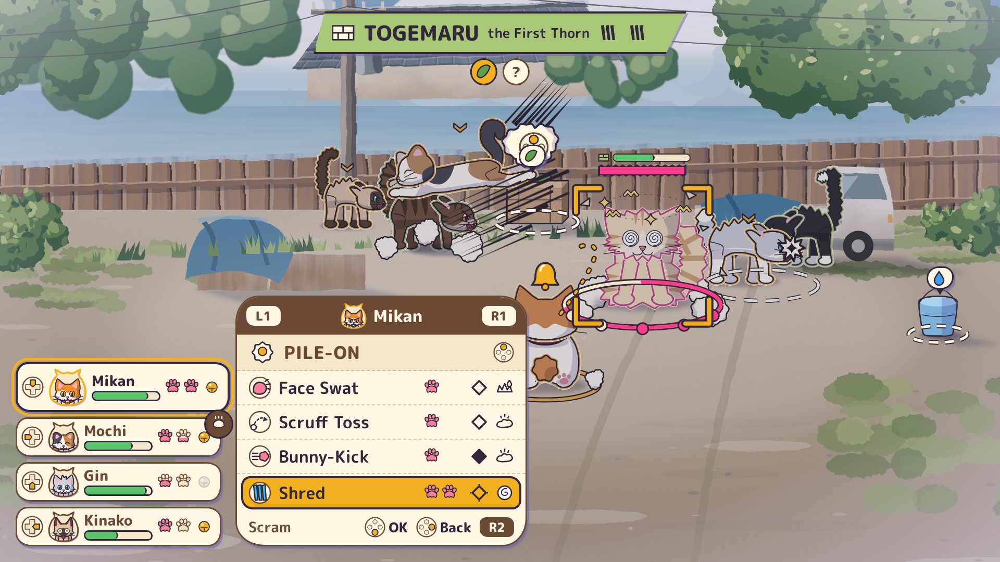
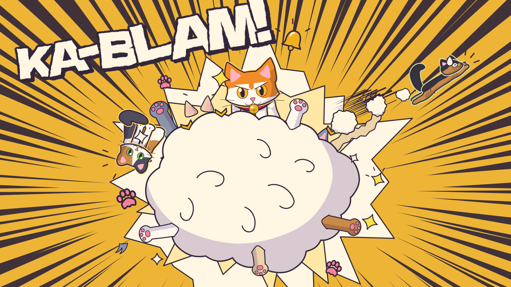
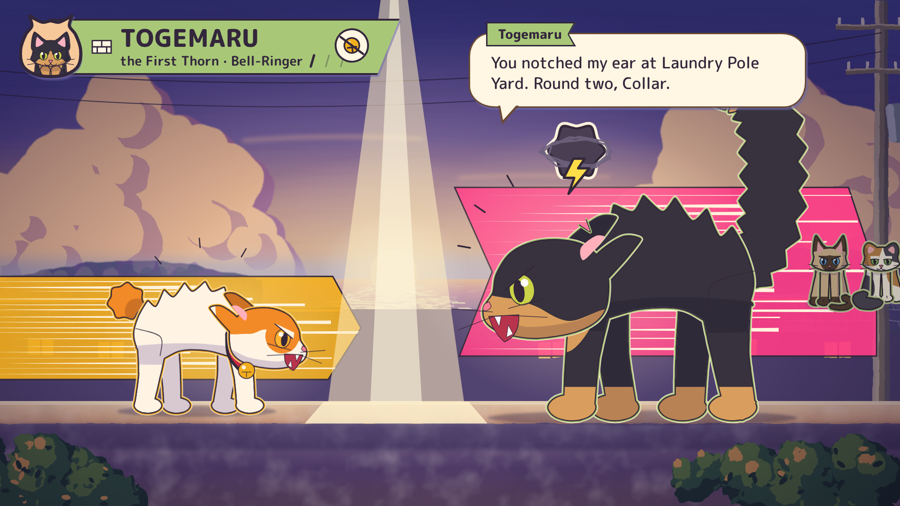
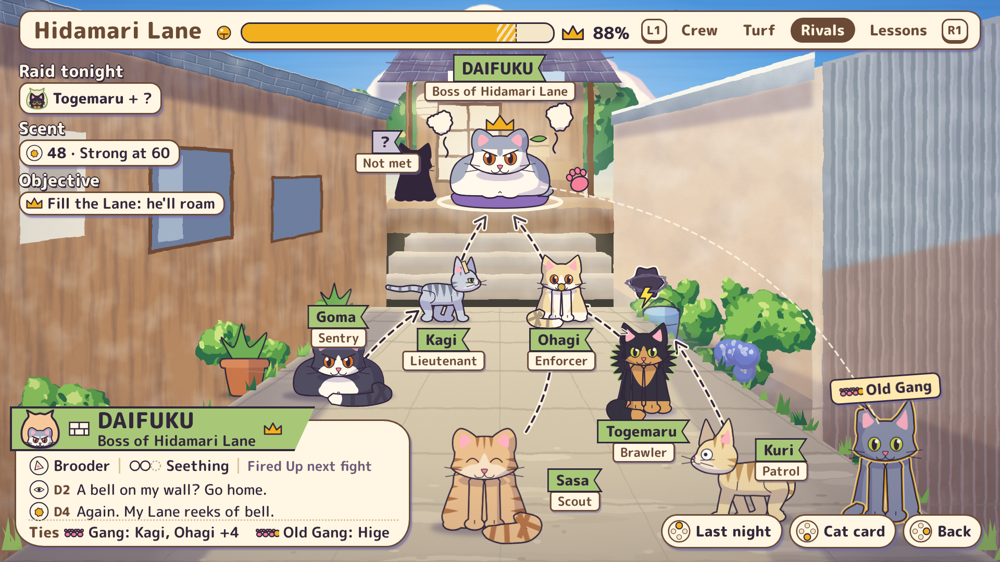
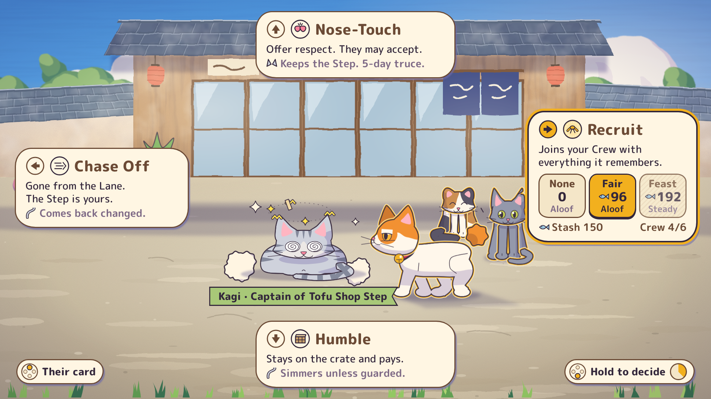
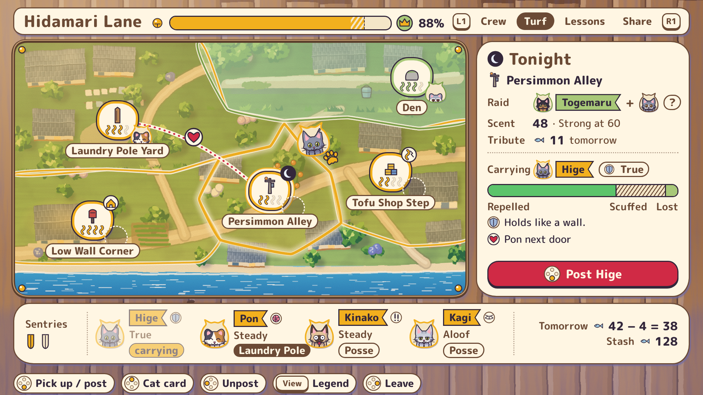
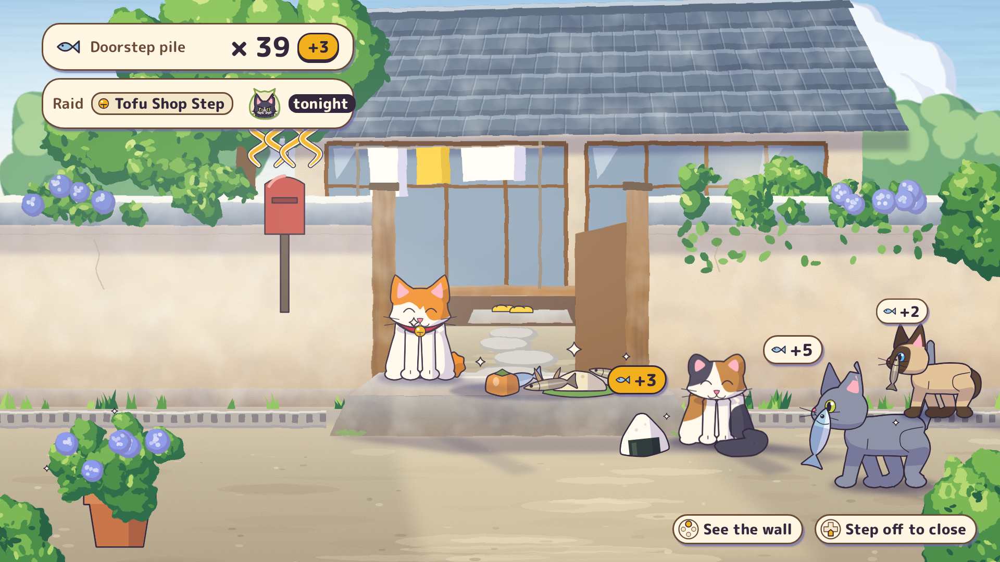
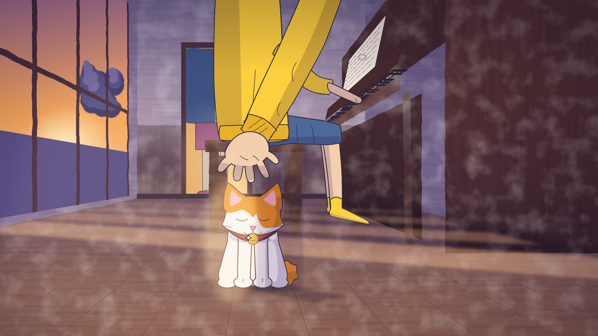

Ten mock screenshots of Cat RPG, drawn from the vertical-slice design documents. You play Mikan, a collared house cat who claims a neighbourhood patch by patch while, at home, the owner's life goes by without a single word you can understand.
These are composed stills, not engine captures. They show the intended look and screen layout: flat inked cats over painted streets, rounded cream UI, and manga-style impact in combat.
The camera sits behind the cat. Humans are legs, hands and shopping bags; the street is painted, and anything a cat can act on carries an ink line.

Real-time fighting with a simple move set. Basic hits fill paw gauges, a slow-motion menu spends them on moves, enemies get ruffled and then frazzled, and switching cats at the right moment chains a relay. You can lose: the clock jumps to night and Mikan walks home.



Every unique cat in town has a personality, a strength, a fear and a memory of what it has been through with you. Scars sit on the silhouette so you can recognise a cat at a distance. A rival's history lives on that cat alone: what you do to one cat never rewrites another.



Half the game. Fighting gangs and marking ground raise your influence in a district; at full influence its boss starts roaming the streets and can be challenged. Influence fades if you neglect it, and newcomers arrive in town to take ground back. You post crew cats to guard, and who you post matters. Cats on your turf pay you in food.


Every day ends at home. The owner's story is told only by what you can see and hear from the floor: who is in the room, what has moved, and whether the piano piece gets past the bar where it always stalls.

The creative director's scores after the third review pass, out of ten, taken before your feedback. After the feedback pass the director expects Territory to rise to about 7 on standing out, and Nemesis to settle at about 7.5 because of the distance it now keeps from the patent.
| Feature | Ready to prototype | Will it stand out |
|---|---|---|
| Dual Story Progression | 8 | 9 |
| Nemesis (rivals) | 8 | 8 |
| Combat | 8 | 7 |
| Crew personality | 7 | 7 |
| Territory and economy | 7 | 5 |
Territory was the weakest on standing out. Your feedback added district influence that fades, a roaming boss, and newcomers who come to take ground back, which gives the posting decision real stakes.